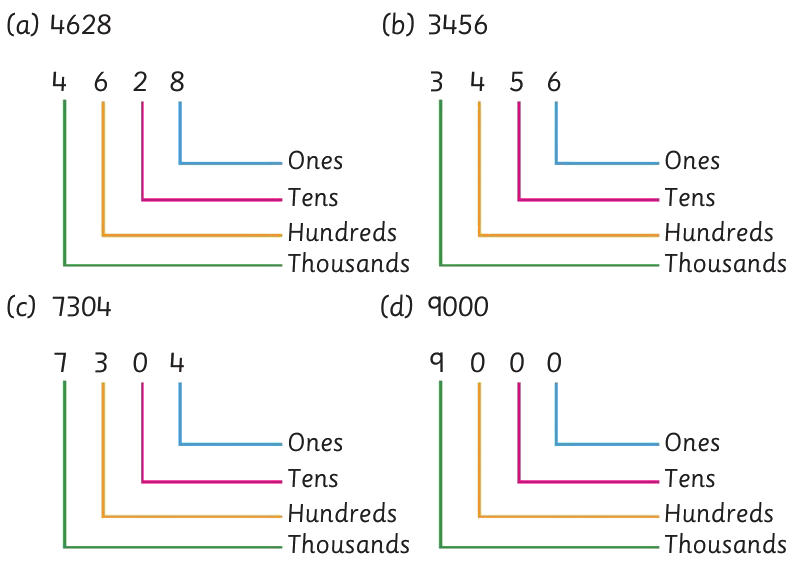

Example 5
Identify / determine / find / state the place value of each digit in the following whole numbers:
(a) 4628
(b) 3456
(c) 7304
(d) 9000
Answer

A. 4628. Four thousands, six hundreds, two tens, and eight ones.B. 3456. Three thousands, four hundreds, five tens, and six ones.C. 7304. Seven thousands, three hundreds, zero tens, and four ones.D. 9000. Nine thousands, zero hundreds, zero tens, and zero ones.